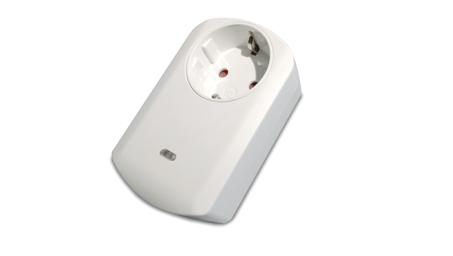
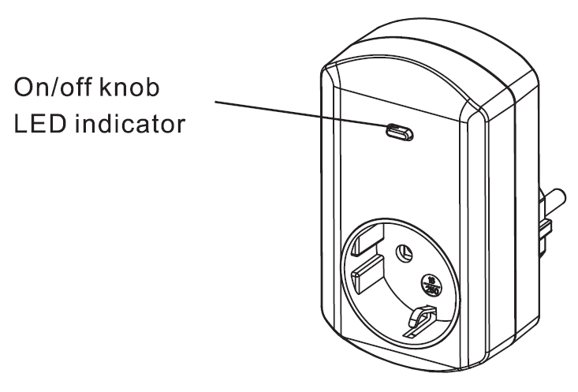

PHI_PAN11
Firmware Version : 1.1 |
 |
Quick StartA This device is a Z-Wave Actor. Tripple click the button on the device confirms the inclusion, exclusion and association. After plugging in it will stay in auto inclusion mode for 4 minutes. Please refer to the chapters below for detailed information about all aspects of the products usage. |
Product description
The PAN11 is a Plug-in switch, which can be placed between a wall outlet for Schuko plug and electric devices with a resistive load up to 3000W, plugged in by cord. In addition, this intelligent plug-in switch is able to detect the voltage, the power factor, the current amd measure the electric power taken by this load (in Wh) as well as meter the electrical energy consumed (in kWh). It will also detect a possible overload (3010 ~ 3300W) of the connected electrical device. When detecting an overload, the module is deactivated and the LED will flash for 30 seconds.
Installation Guidelines

In the front casing there is an On/Off button with LED indicator, which is used to toggle switch on and off or carry out inclusion, exclusion, reset or association. When first powered, the LED flashes on and off alternately at a 2-seconds interval. It implies that it is not included in a Z-Wave network and has not been assigned a node ID.
Auto Inclusion
The auto inclusion starts when the switch is not included into a Z-Wave network and plugged into a wall outlet. Auto inclusion timeout is 4 minutes during the node information frame will be emitted once every 5 seconds. Unlike the normal inclusion it is not necessary pressing the On/Off button on the switch. If auto inclusion exceeds the timeout you have to include the device manually.
Note: Do not locate the switch facing direct sunlight, humid or dusty places. The suitable ambient temperature for the switch is 0°C - 40°C. Do not locate the switch near to combustible substances or any source of heat. After putting it into use, the casing of the switch will become a little bit warm.
Behavior within the Z-Wave network
I On factory default the device does not belong to any Z-Wave network. The device needs to join an existing wireless network to communicate with the devices of this network. This process is called Inclusion. Devices can also leave a network. This process is called Exclusion. Both processes are initiated by the primary controller of the Z-Wave network. This controller will be turned into exclusion respective inclusion mode. Please refer to your primary controllers manual on how to turn your controller into inclusion or exclusion mode. Only if the primary controller is in inclusion or exclusion mode, this device can join or leave the network. Leaving the network - i.e. being excluded - sets the device back to factory default.
If the device already belongs to a network, follow the exclusion process before including it in your network. Otherwise inclusion of this device will fail. If the controller being included was a primary controller, it has to be reset first.
Tripple Click the button on the device confirms inclusion and exclusion. After plugging in it will stay in auto inclusion mode for 4 minutes.
Operating the device
Manual Operation
- Plug the device into a wall outlet near the load to be controlled.
- Plug the load into the switch. Make sure the load to be controlled cannot exceed 3000 watts.
- Press the button or switch the load to the ON position.
- To manually turn ON the switch, press and release the On/Off button. The LED will turn on, and the load plugged into the switch will also turn on.
- To manually turn OFF the switch, simply press and release the On/Off button again. The LED will turn off and the load plugged into the switch will also turn off.
Remote Operation
Remote On/Off control of the switch is possible with any manufacturer's Z-Wave controller. Further you can set associations to let your device controlled by other Z-Wave devices like sensors.
The switch is able to detect the current wattage (5 - 3150W) and overload wattage (3010 - 3300W) of connected ligths or appliances. When detecting overload state, the switch will be disabled and its On/off button will be locked and the LED will flash quickly. However unplug and reconnect the switch to reset its overload condition to normal status.
Node Information Frame
NI The Node Information Frame is the business card of a Z-Wave device. It contains information about the device type and the technical capabilities. The inclusion and exclusion of the device is confirmed by sending out a Node Information Frame. Beside this it may be needed for certain network operations to send out a Node Information Frame.
Tripple click the button on the device sends out a Node Information Frame.
Associations
A Z-Wave devices control other Z-Wave devices. The relationship between one device controlling another device is called association. In order to control a different device, the controlling device needs to maintain a list of devices that will receive controlling commands. These lists are called association groups and they are always related to certain events (e.g. button pressed, sensor triggers, ...). In case the event happens all devices stored in the respective association group will receive a common wireless command.
Association Groups:
| 1 | When the power consumption of load vary over 5%, the PAN11 will send a Meter Report. When "on" or "off" state has been changed, it will send Binary Switch Report. (max. nodes in group: 1) |
Configuration Parameters
Z-Wave products are supposed to work out of the box after inclusion, however certain configuration can adapt the function better to user needs or unlock further enhanced features.
IMPORTANT: Controllers may only allow to configure signed values. In order to set values in the range 128 … 255 the value sent in the application shall be the desired value minus 256. For example: to set a parameter to 200 it may be needed to set a value of 200 minus 256 = minus 56. In case of two byte value the same logic applies: Values greater than 32768 may needed to be given as negative values too.
| Value | Description |
|---|---|
| 1 — 32767 | 720 * 5s = 3600s = 1 hour (Default 720) |
| Value | Description |
|---|---|
| 1 — 32767 | 6 * 10min = 1hour (Default 6) |
| Value | Description |
|---|---|
| 10 — 3000 | wattage threshold value (Default 3000) |
| Value | Description |
|---|---|
| 1 — 10000 | KWh threshold value (Default 10000) |
Technical Data
| IP Rating | IP20 |
| Explorer Frame Support | Yes |
| SDK | 6.1 |
| Device Type | Slave with routing capabilities |
| Generic Device Class | Binary Switch |
| Specific Device Class | Binary Power Switch |
| Routing | Yes |
| FLiRS | No |
| Firmware Version | 1.1 |